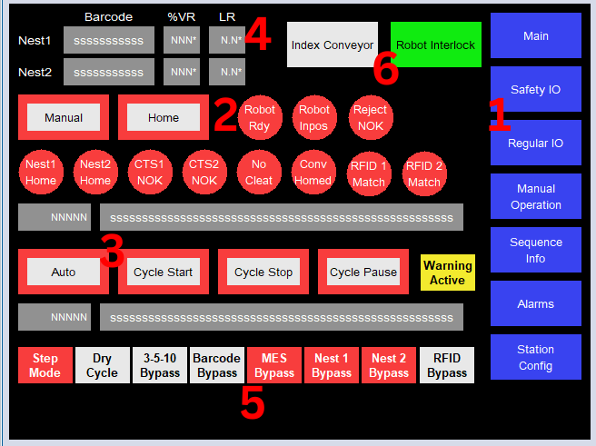
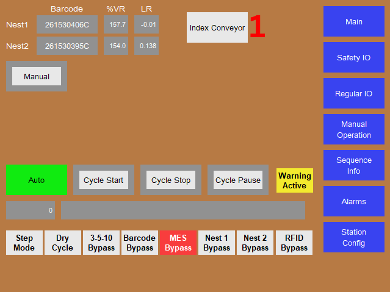
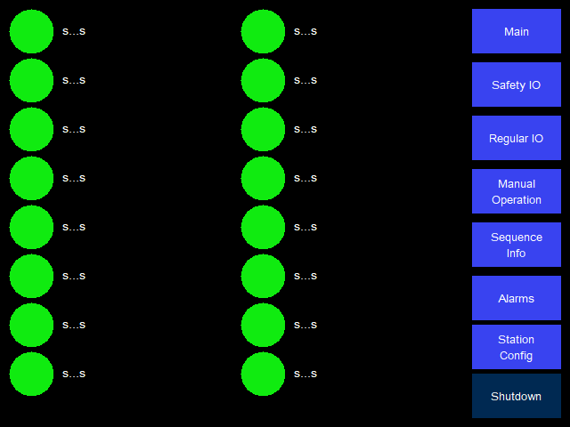
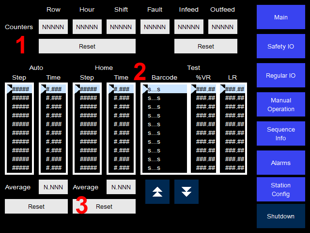
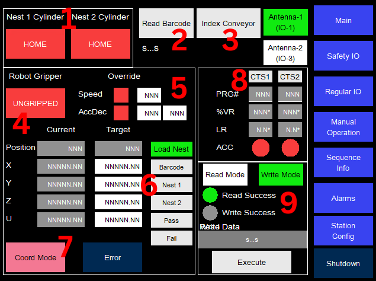
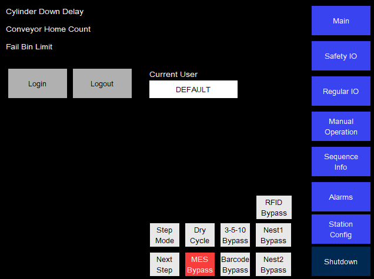
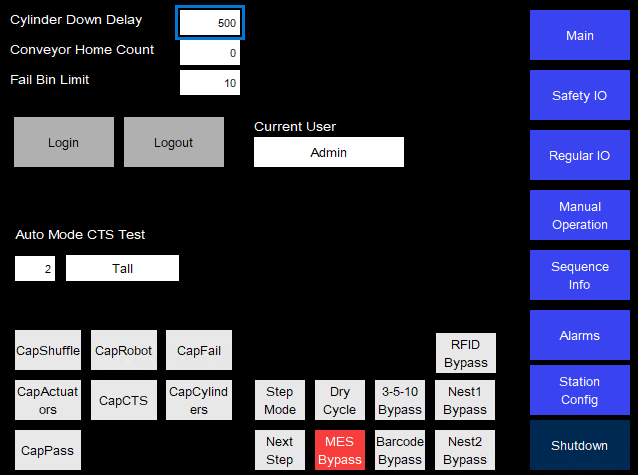

|
My Project
|

The image shows all elements. The Robot Interlock button is only shown when an Administrator is logged in.
These buttons are used to navigate between the different screens.
The station needs to be in the homed state prior to entering Auto Mode. The homing sequence is started by pressing the Home button while in Manual Mode. The homing is considered complete when all indicators are green. The homing sequence has a hard time out of 2 minutes.
RFID Fixture Check Once both nest cylinders are in the home position, each nest fixture is at its RFID head. The homing sequence then scans the fixture RFID tag of Nest 1 followed by Nest 2 and compares each to the expected fixture value for the current module type (Short or Long) received from the previous station.
The RFID fixture check only runs as part of the homing sequence. The fixture check is cleared, and the station must be homed again before entering Auto Mode, when:
When changing over to a different module type, make sure the new module type has been received from the previous station before pressing Home.
| Element | Purpose |
|---|---|
| Home (Temporary Button) | Starts the homing sequence. Shows Homing with a yellow border while the homing sequence is running, and Home with a green border once the station is homed |
| Robot Rdy (Indicator) | The ib_Ready signal is set to high from the robot |
| Robot Inpos (Indicator) | The robot is in the rest (barcode) position |
| Reject NOK (Indicator) | The reject bin is not present |
| Nest1 Home (Indicator) | The cylinder for nest 1 is in the home position |
| Nest2 Home (Indicator) | The cylinder for nest 2 is in the home position |
| CTS1 NOK (Indicator) | Leak tester 1 previous results not cleared |
| CTS2 NOK (Indicator) | Leak tester 2 previous results not cleared |
| No Cleat (Indicator) | Conveyor cleat is not in position |
| Conv Homed (Indicator) | Conveyor has at least N empty spots |
| RFID 1 Match (Indicator) | The nest 1 fixture RFID tag matches the expected value |
| RFID 2 Match (Indicator) | The nest 2 fixture RFID tag matches the expected value |
| Element | Purpose |
|---|---|
| Manual (Temporary Button) | Changes the PLC to Manual Mode |
| Auto (Temporary Button) | Changes the PLC to Auto Mode |
| Cycle Start (Temporary Button) | Starts the production sequence. Can only be started when Auto Mode is active |
| Cycle Stop (Temporary Button) |
|
| Cycle Pause (Temporary Button) |
|
| Warning Active (Banner) | Shown when a warning is active |
Displays the last scanned barcode for each nest as well as the % Volume (VR) and Leak Rate (LR) test results.
All buttons found here other than Next Step are toggle buttons. All bypasses should be toggled on prior to pressing Cycle Start.
| Button | Purpose |
|---|---|
| Step Mode/Next Step | Puts the production sequence in Cycle Pause and allows for manual sequence stepping |
| Dry Cycle | Production sequence will operate as if parts are present |
| 3510 Bypass | Bypasses faults caused by 3 5 10 rules |
| Barcode Bypass | Bypasses barcode scanning in production sequence |
| MES Bypass | Bypasses all MES related checks |
| Nest1/2 Bypass | Bypasses selected nest during production sequence |
| RFID Bypass | Bypasses the RFID fixture check during homing |
Index Conveyor: Indexes the conveyor 1 full position. Only displayed in Auto Mode, for all users. See Index Conveyor (Auto).
Robot Interlock: Allows the robot to be run manually. Only displayed when an Administrator is logged in, in both Manual and Auto Mode.

The Auto button is shown green while the station is running in Auto Mode. Homing controls are hidden in Auto Mode.
Allows operators to index the conveyor manually while in Auto Mode. Available to all users.
All IO pages follow a similar layout of LEDs and labels

The Safety IO page only displays the status of all safety inputs and outputs.
The Regular Input pages display the status of all input signals as well as its global trigger count. These counts are reset when pressing the LED. These counts are only used for debug purposes and are not and should not be used in logic.
The Regular Output page displays the status of all output signals. The LEDs act as toggle buttons, but do not override PLC logic. As such, most signals cannot be toggled from this screen.

Reset buttons are only visible when an Administrator is logged in.
| Counter | Purpose | Reset |
|---|---|---|
| Row | Number of failed units in a row | Non-consecutive fail |
| Hour | Number of failed units per hour | New hour |
| Shift | Number of failed units per shift | Shift change |
| Fault | Number of faults triggered, concurrent faults may only count once | Shift change |
| Infeed | Number of units picked up from load nest | Button |
| Outfeed | Number of units unloaded to conveyor | Button |
Sequence lists display the step history. Test lists display the test history. Navigation buttons found at the bottom will navigate only the active list. Related lists are not synced in terms of positions and need to be individually aligned via navigation buttons.
All lists are in reverse order, where the latest data populate the top most entry. If an array is not fully populated, the top entries of the list may be empty.
Average indicates the average cycle time. The reset buttons will reset all sequence related data.
View and reset faults and warnings.

All controls shown here are only available in Manual Mode.
Manual controls for nest cylinder position.
Manual trigger for barcode scanner.
Manual indexing of conveyor. Button press will index conveyor 1 full position. Jogging not possible.
Manual toggle of robot gripper. Gripping without a DUT will cause a gripper fault.
Override default robot parameters based on entered values. Overrides persist in Auto Mode.
Toggle buttons or Target Position sets robot movement target. Press Start to execute movement. Moving to Load Nest requires upstream interlock.
Toggles robot movement between Position mode and Coord mode. The same button switches between the two modes and is only displayed in Manual Mode.
Manually set leak tester program number and trigger tests.
Manual read and write of the fixture RFID tags. Read Mode is available to all users. Write Mode is only shown when an Administrator user is logged in.
Selects which RFID head the command is sent to.
Selects the command to run on Execute.
In Read mode, displays the 24 character value read from the tag after Execute is pressed. In Write mode, pressing the box opens a keyboard to enter the 24 character value to write.
Runs the selected Read Mode / Write Mode command on the selected antenna.


System-wide modes and bypasses are also available at the bottom of this page.
Used for logging into higher level access users. Current User shows the logged in user. Users in the Administrator group will see additional controls on various pages. Authenticated users will be logged out after 10 minutes of idle time.
| User | Password | Group |
|---|---|---|
| MAGNA | MAGNA | Administrators |
| Admin | Admin | Administrators |
| DEFAULT |
Only editable when an Administrator is logged in.
Cylinder Down Delay: Time in ms delay between triggering the cylinder down sensor and starting the leak tester tests. Conveyor Home Count: Number of empty pockets required when homing conveyor. Fail Bin Limit: Number of DUTs registered to the fail bin before it is prompted for emptying.
Only visible when an Administrator is logged in.
CTS: Program number loaded on the leak testers. DUT Type: Type of DUT being tested, Tall or Short.
The Cap buttons (CapShuffle, CapRobot, CapFail, CapActuators, CapCTS, CapCylinders, CapPass) select capability test modes.